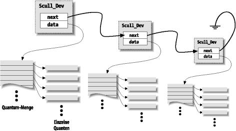

Bevor wir die read- und write-Operationen einführen, sollten wir besser noch einen Blick darauf werfen, wie und warum scull Speicher alloziert. Das “Wie” müssen wir wissen, um den Code gründlich zu verstehen, und das “Warum” demonstriert, welche Entscheidungen ein Treiber-Programmierer treffen muß, obwohl scull sicherlich nicht typisch für ein Gerät ist.
In diesem Abschnitt behandeln wir nur, wie Speicher in scull alloziert wird, und gehen nicht auf die anderen Bereiche der Hardware-Verwaltung ein, die Sie kennen müssen, um richtige Treiber zu schreiben. Diese Kenntnisse erwerben Sie in Kapitel 8 und Kapitel 9. Daher können Sie diesen Abschnitt überspringen, wenn Sie nicht daran interessiert sind, wie der speicherorientierte scull-Treiber arbeitet.
Die Region im Speicher, die von scull verwendet wird und die wir hier auch ein Gerät nennen, hat eine variable Länge. Je mehr Sie schreiben, um so größer wird sie. Der Speicherbereich kann wieder verkürzt werden, indem das Gerät mit einer kürzeren Datei überschrieben wird.
Die Implementation, die wir für scull gewählt haben, ist nicht so besonders intelligent. Aber der Quelltext für eine intelligentere Implementation wäre schwieriger zu lesen, und in diesem Kapitel geht es darum, sich mit read und write zu beschäftigen, und nicht mit der Speicherverwaltung. Darum verwendet der Code nur kmalloc und kfree, ohne darauf zurückzugreifen, ganze Seiten zu allozieren, auch wenn das effizienter wäre.
Andererseits wollten wir aber auch die Größe des Geräte-Bereiches nicht beschränken, sowohl aus prinzipiellen als auch aus praktischen Gründen. Prinzipiell betrachtet, sind willkürliche Beschränkungen bezüglich der Größe der verwalteten Daten immer schlecht, und praktisch gesehen kann scull dazu verwendet werden, um nach und nach den gesamten Systemspeicher zu verbrauchen, um zu testen, wie sich Ihre Programme bei geringem Speicher verhalten. Mit solchen Tests können Sie auch die Interna des Systems besser verstehen. Sie können den Befehl cp /dev/zero /dev/scull0 verwenden, um das gesamte RAM von scull verbrauchen zu lassen, oder mit dem Hilfsprogramm dd selbst entscheiden, wie viele Dateien in das scull-Gerät kopiert werden sollen.
In scull ist jedes Gerät eine verkette Liste von Zeigern, die alle auf ein Scull_Dev zeigen. Jede dieser Strukturen kann defaultmäßig über ein Array von Zwischenzeigern auf maximal vier Millionen Bytes verweisen. Die Quellen verwenden ein Array von 1000 Zeigern auf Bereiche von jeweils 4000 Bytes. Wir nennen jeden Speicherbereich ein Quantum und das Array (oder seine Länge) eine Quantum-Menge. Ein scull-Gerät und seine Speicherbereiche sind in Abbildung 3-1 zu sehen.
Abbildung 3-1. Das Layout eines scull-Geräts

Die Zahlen sind so gewählt, daß das Schreiben eines einzelnen Bytes in scull acht- oder zwölftausend Bytes im Speicher verbraucht: viertausend für das Quantum und vier- oder achttausend für die Quantum-Menge (je nachdem, ob ein Zeiger auf der Zielplattform 32 oder 64 Bits groß ist). Auf der anderen Seite ist der Verwaltungsaufwand beim Durchlaufen der verketteten Liste durchaus nicht so schlecht, wenn große Datenmengen geschrieben werden, weil es nur ein Listenelement für vier Megabyte Daten gibt und die maximale Größe des Gerätes auf einige wenige Megabytes beschränkt ist, da es nicht größer als der Computerspeicher werden kann.
Die Wahl passender Werte für das Quantum und die Quantum-Menge ist eine Frage der Policy und nicht des Mechanismus; die optimalen Werte hängen davon ab, wie das Gerät verwendet wird. Der scull-Treiber sollte also keine bestimmten Werte für das Quantum und die Quantum-Menge erzwingen. In scull kann der Benutzer die Werte auf verschiedene Art und Weise verändern: durch das Ändern der Makros SCULL_QUANTUM und SCULL_QSET in scull.h beim Kompilieren, durch das Setzen der Integer-Werte scull_quantum und scull_qset beim Laden des Moduls oder durch das Ändern der aktuellen und der Default-Werte mittels ioctl-Aufrufen zur Laufzeit.
Die Verwendung eines Makros und eines Integer-Wertes, um eine Konfiguration sowohl zur Kompilierungs- als auch zur Ladezeit zu ermöglichen, erinnert daran, wie wir die Major-Nummer ausgewählt haben. Wir verwenden diese Technik immer, wenn ein Wert im Treiber willkürlich oder Policy-abhängig ist.
Die einzige verbleibende Frage ist, welche Default-Werte gewählt werden sollten. In diesem speziellen Fall besteht das Problem darin, die beste Balance zwischen der Speicherverschwendung halbgefüllter Quanta und Quantum-Mengen und dem Verwaltungsaufwand beim Allozieren, Deallozieren und Verwalten der Zeiger-Verkettung zu finden, der auftritt, wenn die Quanta und die Quantum-Mengen klein sind.
Darüber hinaus muß auch noch das interne Design von kmalloc berücksichtigt werden. Wir werden hier aber nicht auf die Details eingehen. Die Innereien von kmalloc werden im Abschnitt the Section called Die ganze Wahrheit über kmalloc in Kapitel 7 in Kapitel 7 seziert.
Die Default-Werte wurden in der Annahme gewählt, daß die meisten Programmierer mehr als vier Megabyte RAM haben und daß wahrscheinlich sehr große Datenmengen auf scull geschrieben werden. Die Besitzer großer Computer werden zum Testen mehrere zehn Megabyte auf das Gerät schreiben, auch wenn normalerweise nur ein paar Kilobyte transportiert werden werden.
Die Datenstruktur, die die Geräteinformation enthält, sieht folgendermaßen aus:
typedef struct Scull_Dev {
void **data;
struct Scull_Dev *next; /* naechstes Listenelement */
int quantum; /* die aktuelle Quantum-Groesse */
int qset; /* die aktuelle Array-Groesse */
unsigned long size;
devfs_handle_t handle; /* nur bei devfs verwendet */
unsigned int access_key; /* wird von sculluid und scullpriv verwendet */
struct semaphore sem; /* Semaphor zum gegenseitigen Ausschluss */
} Scull_Dev; |
Der folgende Code zeigt, wie Scull_Dev in der Praxis verwendet wird, um Daten zu speichern. Die Funktion scull_trim ist dafür zuständig, den gesamten Datenbereich freizugeben, und wird von scull_open aufgerufen, wenn die Datei zum Schreiben geöffnet wird. Sie traversiert einfach die Liste und gibt alle vorgefundenen Quanta und Quantum-Mengen frei.
int scull_trim(Scull_Dev *dev)
{
Scull_Dev *next, *dptr;
int qset = dev->qset; /* "dev" ist nicht null */
int i;
for (dptr = dev; dptr; dptr = next) { /* alle Listenelemente */
if (dptr->data) {
for (i = 0; i < qset; i++)
if (dptr->data[i])
kfree(dptr->data[i]);
kfree(dptr->data);
dptr->data=NULL;
}
next=dptr->next;
if (dptr != dev) kfree(dptr); /* alle außer dem ersten */
}
dev->size = 0;
dev->quantum = scull_quantum;
dev->qset = scull_qset;
dev->next = NULL;
return 0;
} |